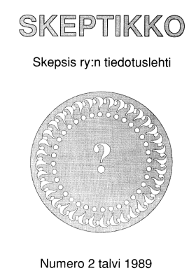
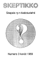
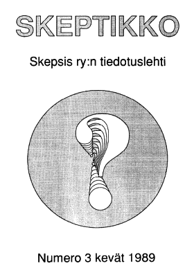
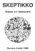
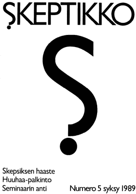

Skeptikko-lehti 1989
Ellei sinulla jo ole tietokoneellasi pdf-muodossa olevan tiedoston lukemiseen tarvittavaa
Acrobat Reader -ohjelmaa, saat sen ladattua maksutta tästä kuvakkeesta:

Skeptikko on Skepsis ry:n neljä kertaa vuodessa ilmestyvä jäsenlehti. Tästä verkkoversiosta löydät koko lehden sisällön PDF-muodossa.
 Skeptikko 2, talvi 1989
- S. Albert Kivinen: Puheenjohtaja pakisee
- S. Albert Kivinen: Daniel Home – meedioiden kuningas vai puhkaistu kupla
- Nils Edelman: Erich Schulte-Berge – Velikovskin ja von Dänikenin tuntematon haastaja
- Heta Häyry ja Matti Häyry: AIDS, luontaislääkintä ja esi-isien ilkeät henget
- Pekka Hartola: ”Vaihtehtoista” aatepuuroa opistoissa ja lehdissä
- Matti Virtanen: Uutisia
- Hannu Karttunen: Ennustuksia
- Skepsiksen tiedotuksia
  Skeptikko 3, kevät 1989
- Nils Mustelin: Pääkirjoitus: Visiot ja laadunvalvonta
- Pekka Roponen: Mitä hypnoosi on ja mitä se ei ole
- Hannu Karttunen: Minne unohtuivat negatiiviset tulokset?
- Nils Edelman: Transsimeedion lauluesitys
- Kirjallisuutta
- Kalevi Kuitunen: Näennäiskriittistä parapsykologiaa
- Timo Kaitaro: Sheldrake ja organismin mysteerit
- Hannu Karttunen: CSICOPin kokous
- Erkki Kauhanen: Löytyykö kiinnostusta Ilmiön etsintään?
- Matti Virtanen: Skepsis r.y.:n toimintakertomus 1988
- Matti Virtanen: Toimintasuunnitelma loppuvuodelle 1989
 Skeptikko 4, kesä 1989
- Nils Mustelin: Skeptikko ja paranormaalit ilmiöt
- Erkki Kauhanen: CSICOPin kokous Bad Tölzissä 5–7.5.1989
- Kirjallisuutta
- Kalevi Kuitunen: Kiinalainen skeptikko ajanlaskumme alkuajoilta
- Skepsiksen tiedotuksia
- Johdatus jäsenyyden perusteisiin
- Skepsiksen hallitus
- Skepsis-luennot jatkuvat
- Tähdet ja Avaruus -lehti kaipaa avustusta…
- …mutta älä unohda Skeptikkoakaan
- Paholaisen asianajaja maailmalla
- Muut lehdet
- Skepsiksen seminaari 13.–15.10.1989
 Skeptikko 5, syksy 1989
- Hannu Karttunen: Kauheat skeptikot
- Erkki Kauhanen: Skepsiksen haaste
- Matti Virtanen: Vaikea haaste
- Skepsiksen Huuhaa-palkinto
- Erkki Kauhanen: WSOY ja moniarvoinen kustannuspolitiikka
- Matti Virtanen: Kolme päivää epäilyä
- Erkki Kauhanen: Bob Morris uskoo parapsykologian tulevaisuuteen
- Nils Mustelin: Astrologiasta vilkas keskustelu Skepsiksen seminaarissa
- Timo Kaitaro: Miksi astrologia näyttää toimivan?
- Hannu Karttunen: James Randi sotii huijareita vastaan
- Hannu Karttunen: Voronezhin ufot
- Skepsiksen tiedotuksia
Kaikkien artikkelien © Copyright 1989 Skeptikko-lehti ja kirjoittaja.
Kirjoitukset vapaasti siteerattavissa ja levitettävissä ei-kaupallisiin tarkoituksiin, lähteeksi mainittava kirjoittajan lisäksi Skeptikko-lehti numeroineen.


{kind=link}
{kind=link}
{kind=link}
{kind=link}